statgenHTP tutorial: 4. Outlier detection Time courses
Emilie Millet, Bart-Jan van Rossum, Isabelle Sanchez, Nadine Hilgert
2020-10-09
OutliersTimeCourse_HTP.RmdIntroduction
It consists in detecting outliers in a set of time courses resulting from the observation of one single trait. The detection procedure is applied to each trait individually without considering other traits, meaning that distinct outlier datasets are associated with each considered trait.
The final step consists in extracting interesting parameterd from the modelled time course, for example a maximum rate of growth, or a minimum value in a specific period. These parameters could then be further analysed, for example a GxE analysis (see statgenGxE), or a genetic analysis (see statgenGWAS).
A nonparametric smoothing associated with a PCA
Each time course is modelled by a nonparametric smoothing spline with a fixed number of knots. This is a piecewise cubic polynomial ((Eubank 1999), (Eilers, Marx, and Durbán 2015)) fitted with the ‘gam’ function of the R-package ‘mgcv’.
P-spline
The estimates for the spline coefficients are then extracted per time course (typically per plant) and correlations between those coefficient vectors are calculated to identify outlying time courses, i.e., plants. An outlying time course will have low correlation to the majority of time courses. To support the analysis by correlations, a principal component analysis can be done on the plant (time course) by spline coefficient matrix. A PCA plot of the plant scores will show the outlying plant.
To note, for p-splines in generalized additive model (gam), the smoothing coefficient is optimized by restricted maximum likelihood but the number of knots is chosen by the user.
This document describes the procedure to detect outlying time course with examples on experimental data sets (see Intro_HTP). The data on which the procedures apply are the variables of interest. They may be variables measured directly or indirectly (through image analysis for example). The way they were obtained doesn’t matter. The following functions can be applied to corrected data (see SpatialModel_HTP) or on raw data.
Illustration of the non-parametric smoothing associated with a PCA
The function fitSpline() fits a p-spline per plant for the selected trait using the number of knots chosen by the user. In P-spline, the knots are equally spaced and their number can be large. The user should also chose an appropriate proportion of minimum number of time points that should be in the dataset per plant perMinTP. When a plant has less time points than the minimum, it will be skipped from the analysis.
The functions are illustrated with the three example data sets. For more information about the data, see Intro_HTP.
Example 1
The data from the Phenovator platform have been corrected for spatial trends and time points outliers have been removed (see XXXXX). At this stage, the cleaned and corrected data are used:
data(spatCorrVator) # Format the timepoint spatCorrVator$timePoint <- lubridate::as_datetime(spatCorrVator$timePoint) # Run the function to fit p-spline using the mgcv package on a subset of genotypes subGeno <- c("G70","G160","G151","G179","G175","G4","G55") # fit.spline <- fitSpline(corrDat = spatCorrVator, trait = "EffpsII_corr", genotypes = subGeno, knots = 50, perMinTP = 0.8) # Extracting the tables of predicted values and pspline coeficients pred.Dat <- fit.spline$predDat coef.Dat <- fit.spline$coefDat
The object fit.spline contains the predicted value (pred.value in the table below), i.e the values predicted using the P-spline model coefficients. Conversion to numerical time is required by the mgcv package. In order to keep the same time scale as in the original timePoint column, a simple numerical transformation of the time points is made (column timeNumber). Predictions are made on a denser grid of time points: the time points for prediction are calculated as the smallest gap between two time points divided by 9, so dividing the smallest gap in 10 segments. The object fit.spline also contains the first derivatives (deriv see part XXX about Parameters estimation).
| timeNumber | timePoint | pred.value | deriv | plotId | genotype |
|---|---|---|---|---|---|
| 1527784620 | 2018-05-31 16:37:00 | 0.6699615 | -1e-06 | c10r29 | G160 |
| 1527785420 | 2018-05-31 16:50:20 | 0.6691239 | -1e-06 | c10r29 | G160 |
| 1527786220 | 2018-05-31 17:03:40 | 0.6682884 | -1e-06 | c10r29 | G160 |
| 1527787020 | 2018-05-31 17:17:00 | 0.6674552 | -1e-06 | c10r29 | G160 |
| 1527787820 | 2018-05-31 17:30:20 | 0.6666245 | -1e-06 | c10r29 | G160 |
| 1527788620 | 2018-05-31 17:43:40 | 0.6657966 | -1e-06 | c10r29 | G160 |
The numerical time can be provided by the user, for example when using thermal time or a manual conversion. In this example, we provide a new column with time in hour since first measurement.
fit.splineNum <- fitSpline(corrDat = spatCorrVator, trait = "EffpsII_corr", genotypes = subGeno, knots = 50, perMinTP = 0.8, useTimeNumber = TRUE, timeNumber = "timeNumHour")
We can then visualise the p-spline predictions and first derivatives for a subset of genotypes or for a subset of plots.
plot(fit.spline, genotypes = "G160")
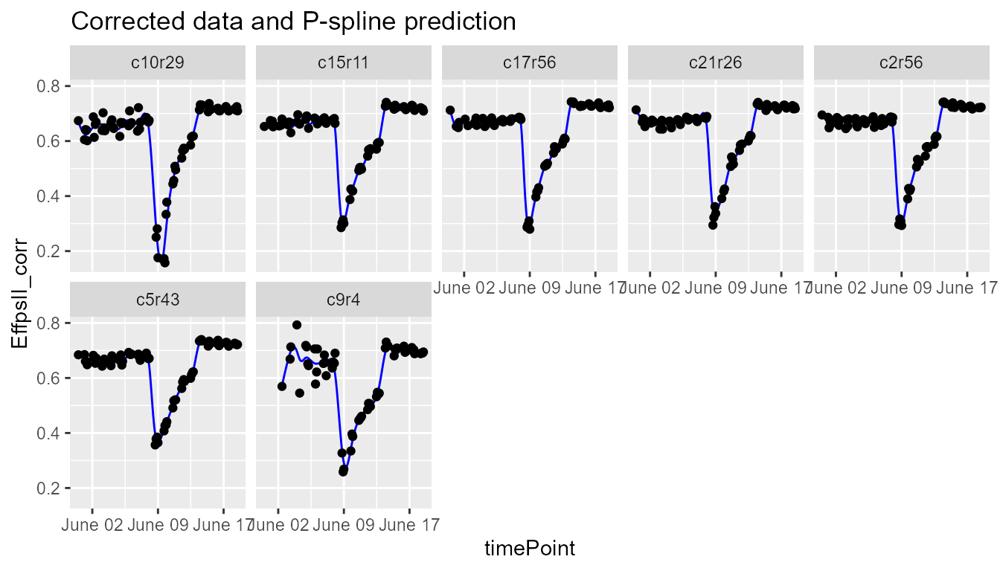
plot(fit.spline, plotIds = "c10r29", plotType = "predictions")
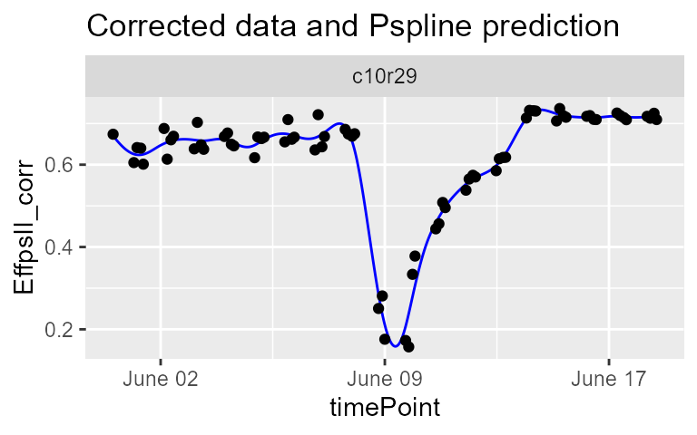
plot(fit.spline, plotIds = "c10r29", plotType = "derivatives")
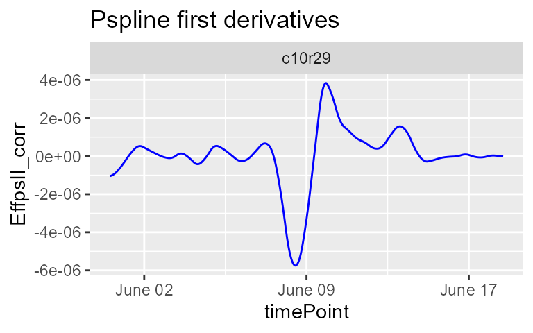
The object fit.spline also contains the values of the P-splines coefficients:
| obj.coefficients | plotId | type | genotype | |
|---|---|---|---|---|
| (Intercept) | 0.6174143 | c10r29 | Intercept | G160 |
| s(timeNumber).1 | 0.0484384 | c10r29 | stimeNumber.1 | G160 |
| s(timeNumber).2 | 0.0153285 | c10r29 | stimeNumber.2 | G160 |
| s(timeNumber).3 | -0.0139713 | c10r29 | stimeNumber.3 | G160 |
| s(timeNumber).4 | -0.0022154 | c10r29 | stimeNumber.4 | G160 |
| s(timeNumber).5 | 0.0197600 | c10r29 | stimeNumber.5 | G160 |
The coefficients are then used to tag suspect time courses with the function detectOutliers(). This function performs a PCA on the coefficients (from data frame coef.Dat) per genotype and tags the plants that have a coordinate on the second PC axis above a threshold (thrPca), see the lines ‘reason = pc2’ in the table below. The function also calculates the pairwise-correlation of the coefficients per genotype. Plants are tagged when the correlation is below a given threshold (thrCor), see the lines reason = mean corr in the table below.
For obvious reasons, the detection will only work when there are at least three replicates per genotype. Genotypes with less than three replicates will be skipped. (TRUE?)
outVator <- detectTimeCourseOutliers(corrDat = spatCorrVator, predDat = pred.Dat, coefDat = coef.Dat, trait = "EffpsII_corr", genotypes = subGeno, thrCor = 0.9, thrPca = 1)
| plotId | genotype | reason | value |
|---|---|---|---|
| c21r25 | G151 | mean corr | 0.8315769 |
| c21r25 | G151 | pc2 | 1.0636029 |
| c9r4 | G160 | mean corr | 0.6907644 |
| c9r4 | G160 | pc2 | 1.0726651 |
| c11r55 | G4 | pc2 | 1.0605128 |
| c4r13 | G70 | pc2 | 1.0853397 |
For this subset of genotypes, 4 plants were tagged as outliers:
- c21r25 and c9r4 had both low correlations and extreme PC axis coordinates,
- c11r55 and c4r13 had extreme PC axis coordinates.
The outVator can be visualised by selecting genotypes. Here genotype G151 which has plant c21r25 tagged as outlier:
plot(outVator, genotypes = "G151")
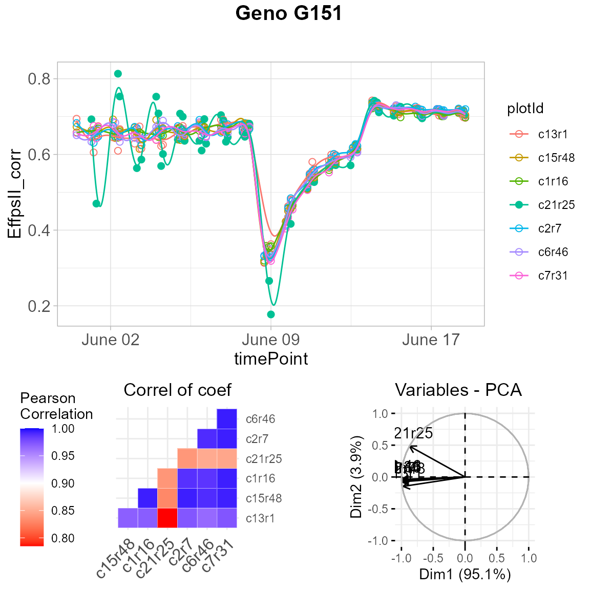
The figure above contains:
- (top) A scatter plot of the trait value in y axis and time in x axis. Points are the raw or corrected data and lines are the p-spline predictions, with one color per plant (in legend).
- (bottom left) A correlation matrix of the plant scores as a heatmap. The scale is centered on 0.9 to see at a glance the outlying plants with low correlations (usually correlation are high between plants).
- (bottom right) A PCA plot of the plant scores. Usually, all plants are grouped and the first axis explained most of the variation. When a plant is outlying, it will be located apart from the other plants on the second axis.
Finally, the outlying plants can be removed from the dataset…
spatCorrVatorOut <- removeTimeCourseOutliers(dat = spatCorrVator, timeCourseOutliers = outVator) # Check one value annotated as outlier in the original corrected data frame head(spatCorrVator[spatCorrVator$plotId=="c21r25", c("EffpsII_corr","EffpsII")]) #> EffpsII_corr EffpsII #> 1814 0.6928991 0.694 #> 4615 0.4700974 0.464 #> 10266 0.8133518 0.819 #> 11683 0.7531879 0.749 #> 14524 0.5637728 0.563 #> 15949 NA NA # Check the same value in the new corrected data frame head(spatCorrVatorOut[spatCorrVatorOut$plotId=="c21r25", c("EffpsII_corr","EffpsII")]) #> EffpsII_corr EffpsII #> 1814 NA 0.694 #> 4615 NA 0.464 #> 10266 NA 0.819 #> 11683 NA 0.749 #> 14524 NA 0.563 #> 15949 NA NA
… and from the predictions.
fit.splineOut <- removeTimeCourseOutliers(fitSpline = fit.spline, timeCourseOutliers = outVator) fit.splineNumOut <- removeTimeCourseOutliers(fitSpline = fit.splineNum, timeCourseOutliers = outVator)
Impact of the number of knots on the smoothing
For one plant of the example 1, we fit the p-spline with 10 or 50 knots and visualize the predictions to compare the smoothness. We advise the user to perform tests of the number of knots on a subset of plants before running the function on all plants.
With 10 knots:
sp10k <- fitSpline(corrDat = spatCorrVator, trait = "EffpsII_corr", plotIds = "c10r29", knots = 10, perMinTP = 0.8) plot(sp10k)

The predicted curve is very smooth and, in this case, it is not following precisely the real data curve shape. When comparing the plants of a same genotype with this curve shape we might not identify the outlying plant.
With 50 knots:
sp50k <- fitSpline(corrDat = spatCorrVator, trait = "EffpsII_corr", plotIds = "c10r29", knots = 50, perMinTP = 0.8) plot(sp50k)
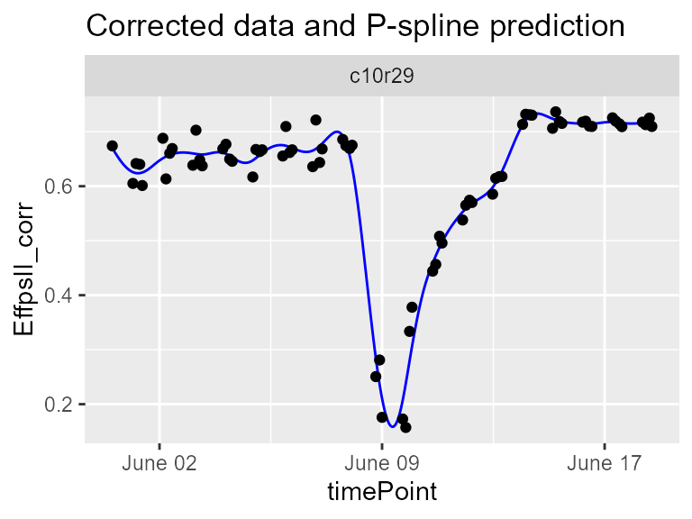
The predicted curve is less smooth and follows the actual curve shape. This seems to be a good setting to detect strange curve shape among the replicates of a genotype.
Example 2
The data from the PhenoArch platform have been corrected for spatial trends and time points outliers have been removed (see XXXXX). At this stage, the cleaned and corrected data are used:
data(spatCorrArch) spatCorrArch$timePoint <- lubridate::as_datetime(spatCorrArch$timePoint) subGeno <- c("GenoA1","GenoA2","GenoA3","GenoA4","GenoB1","GenoB2","GenoB3") # fit.splineArch <- fitSpline(corrDat = spatCorrArch, trait = "Biomass_Estimated_corr", genotypes = subGeno, knots = 15, perMinTP = 0.5) # pred.DatArch <- fit.splineArch$predDat coef.DatArch <- fit.splineArch$coefDat
plot(fit.splineArch, plotIds = "c11r9", plotType = "predictions")
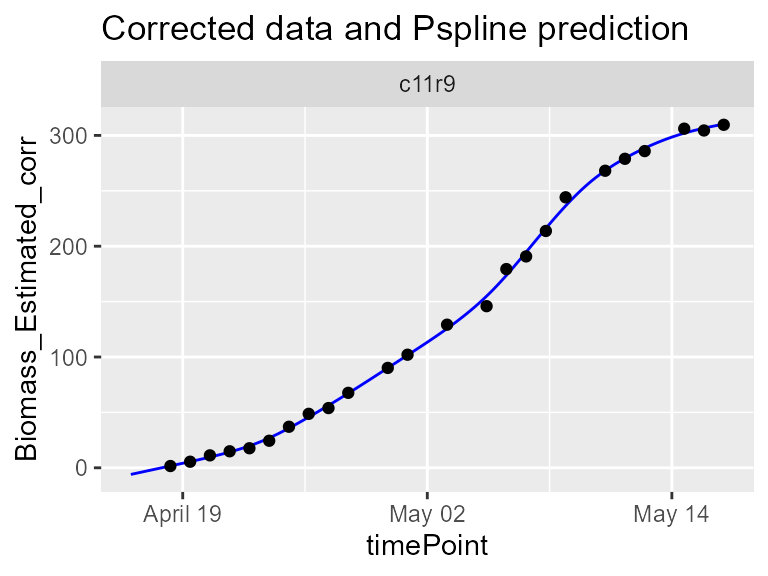
plot(fit.splineArch, plotIds = "c11r9", plotType = "derivatives")
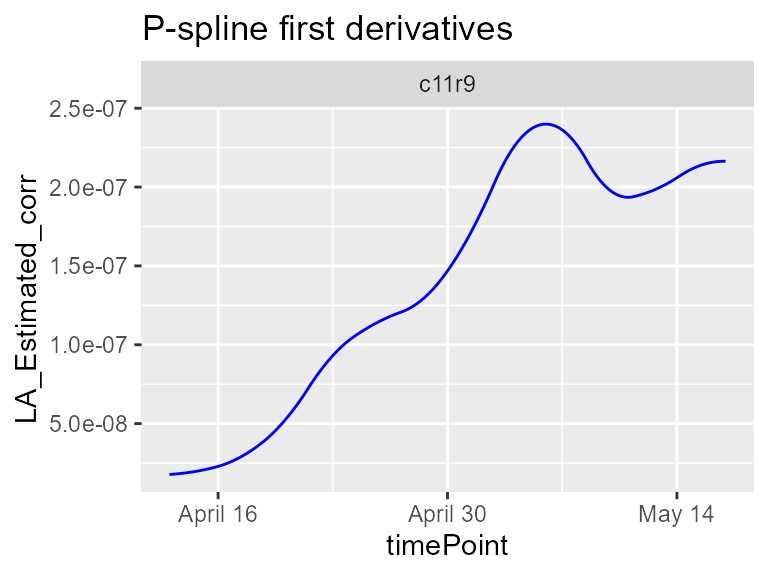
Here, the geno.decomp option is also used to split the plants of each genotypes between well watered and drought. The outliers detection is run per treatment.
outArch <- detectTimeCourseOutliers(corrDat = spatCorrArch, predDat = pred.DatArch, coefDat = coef.DatArch, trait = "Biomass_Estimated_corr", genotypes = subGeno, thrCor = 0.9, thrPca = 1, geno.decomp = "geno.decomp")
| plotId | genotype | geno.decomp | reason | value |
|---|---|---|---|---|
| c17r40 | GenoB2 | WD_Panel2 | pc2 | 1.072931 |
| c7r55 | GenoB3 | WW_Panel2 | pc2 | 1.086501 |
plot(outArch, genotypes = "GenoB3")
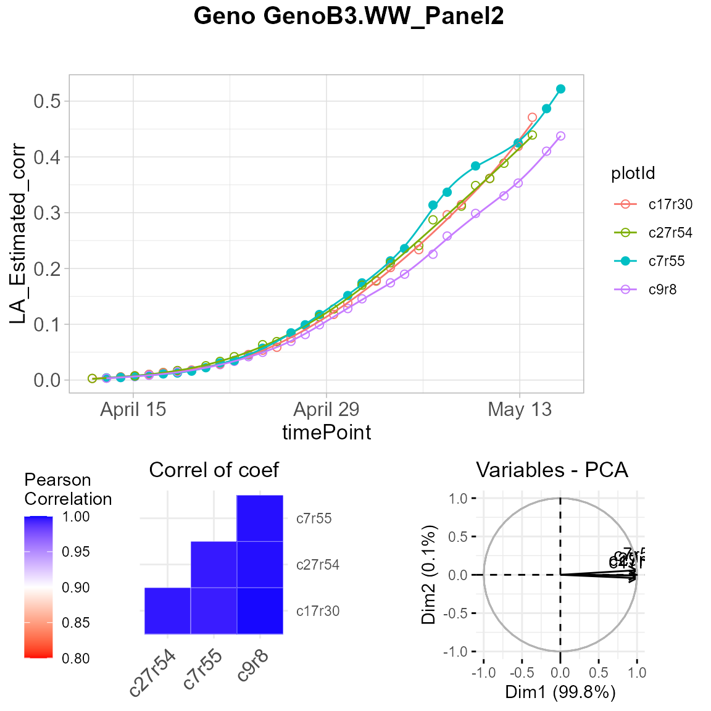
spatCorrArchOut <- removeTimeCourseOutliers(dat = spatCorrArch, timeCourseOutliers = outArch) # Check one value annotated as outlier in the original corrected data frame head(spatCorrArch[spatCorrArch$plotId=="c17r40", c("Biomass_Estimated_corr","Biomass_Estimated")]) #> Biomass_Estimated_corr Biomass_Estimated #> 928 NA NA #> 2598 NA NA #> 5387 1.434445 0.1179894 #> 7813 13.268594 7.7470329 #> 9452 18.149580 12.4334778 #> 10856 22.729554 14.2451385 # Check the same value in the new corrected data frame head(spatCorrArchOut[spatCorrArchOut$plotId=="c17r40", c("Biomass_Estimated_corr","Biomass_Estimated")]) #> Biomass_Estimated_corr Biomass_Estimated #> 928 NA NA #> 2598 NA NA #> 5387 NA 0.1179894 #> 7813 NA 7.7470329 #> 9452 NA 12.4334778 #> 10856 NA 14.2451385
Example 3
The data from the RootPhAir platform have not been corrected for spatial trends but time points outliers have been removed (see XXXXX). At this stage, the cleaned data are used:
noCorrRoot$timePoint <- lubridate::as_datetime(noCorrRoot$timePoint) subGeno <- c( "2","6","8","9","10","520","522") fit.splineRoot <- fitSpline(corrDat = noCorrRoot, trait = "tipPos_y", knots = 10, genotypes = subGeno, perMinTP = 0.001, useTimeNumber = TRUE, timeNumber = "thermalTime") pred.DatRoot <- fit.splineRoot$predDat coef.DatRoot <- fit.splineRoot$coefDat row.names(coef.DatRoot) <- 1:nrow(coef.DatRoot)
plot(fit.splineRoot, genotypes = "2")
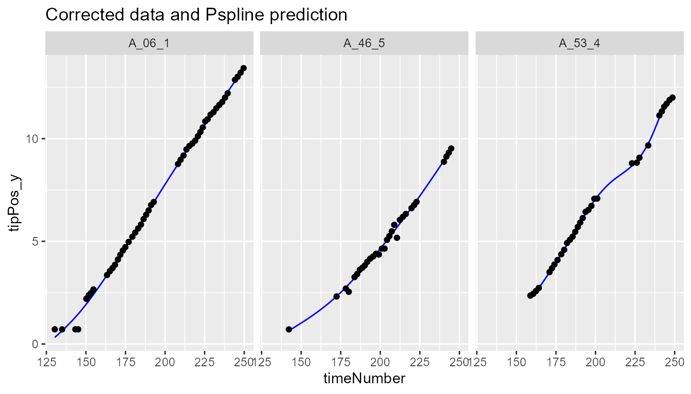
outRoot <- detectTimeCourseOutliers(corrDat = noCorrRoot, predDat = pred.DatRoot, coefDat = coef.DatRoot, trait = "tipPos_y", genotypes = as.character(subGeno), thrCor = 0.9, thrPca = 1.2)
plot(outRoot, genotypes = "2")
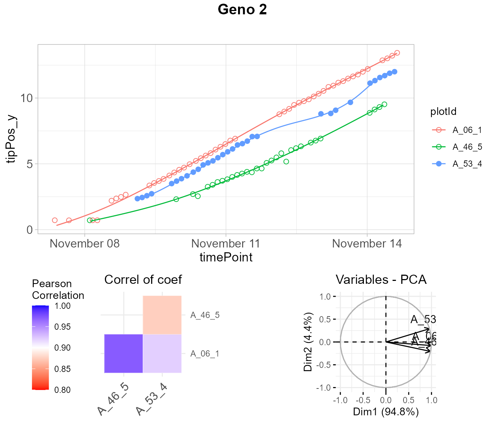
noCorrRootOut <- removeTimeCourseOutliers(dat = noCorrRoot, timeCourseOutliers = outRoot) # Check one value annotated as outlier in the original corrected data frame head(noCorrRoot[noCorrRoot$plotId=="A_53_4","tipPos_y"]) #> [1] 2.357143 2.442857 2.578571 2.728571 3.500000 3.685714 # Check the same value in the new corrected data frame head(noCorrRootOut[noCorrRootOut$plotId=="A_53_4","tipPos_y"]) #> [1] NA NA NA NA NA NA
Extraction parameters from curve
After all the steps of cleaning and modeling… blablabla extract parameters from the curve that are relevant for biology. Some examples are provided below for the Phenovator data set (example 1).
Example 1
We will use the fit.splineNumOut previously created which contains the p-spline prediction without the time course outliers. We could estimate the maximum value of the trait at the beginning of the time course:
subGeno <- c("G70","G160","G151","G179","G175","G4","G55") paramVator1 <- estimateSplineParameters(HTPSpline = fit.splineNumOut, estimate = "predictions", what = "max", timeMin = 330, timeMax = 432, genotypes = subGeno) # library(ggplot2) ggplot(paramVator1, aes(x = genotype, y = x)) + geom_boxplot() + theme_minimal()
For this subset of genotypes, there is a variability in the maximum values of the psII efficiency after the light treatment. This could be used in genetic analysis and maybe to perform a GWAS.
Another example is using the derivative during the recovery period to get the maximum slope, or the maximum rate of the psII per time unit during this period.

paramVator2 <- estimateSplineParameters(HTPSpline = fit.splineNumOut, estimate = "derivatives", what = "max", timeMin = 210, timeMax = 312, genotypes = subGeno) # ggplot(paramVator2, aes(x = genotype, y = x)) + geom_boxplot() + theme_minimal()
References
Eilers, Paul H. C., Brian D. Marx, and Maria Durbán. 2015. “Twenty Years of P-Splines.” Statistics and Operations Research Transactions 39 (2): 149–86.
Eubank, Randall L. 1999. Nonparametric Regression and Spline Smoothing. Statistics: A Series of Textbooks and Monographs. CRC Press.
Hugelier, S., O. Devos, and C. Ruckebusch. 2016. “Chapter 14 - a Smoothness Constraint in Multivariate Curve Resolution-Alternating Least Squares of Spectroscopy Data.” In Resolving Spectral Mixtures, edited by Cyril Ruckebusch, 30:453–76. Data Handling in Science and Technology. Elsevier. https://doi.org/https://doi.org/10.1016/B978-0-444-63638-6.00014-0.